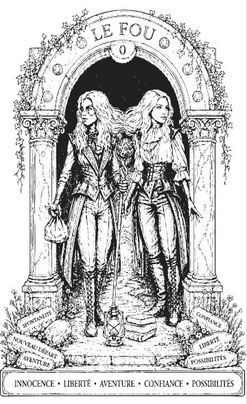
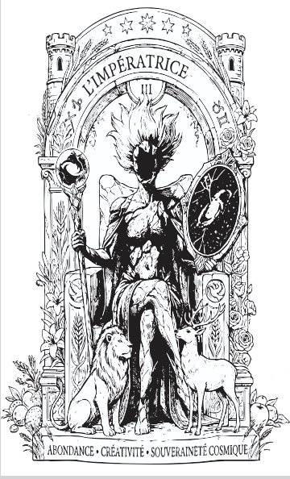
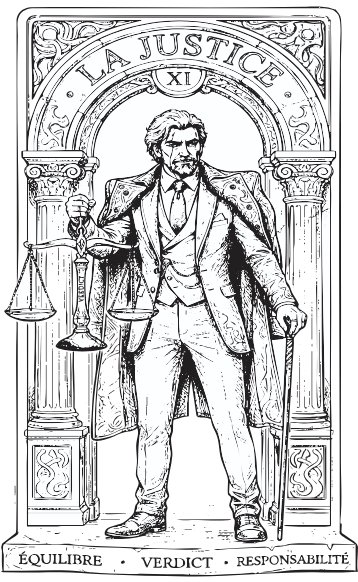
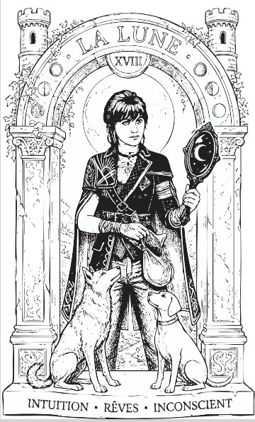
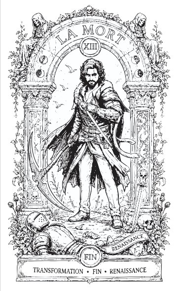
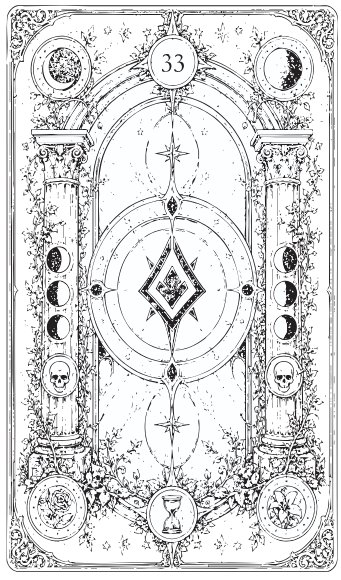

Tarot Clair Obscur
Dans le cadre d'une SAÉ , il m'a été demandé de concevoir un jeu de cinq cartes de tarot dans un thème libre. J'ai choisi l'univers d'Expédition 33, plongeant chaque carte dans une esthétique clair obscur encre noire sur fond blanc, contrastes profonds, détails architecturaux gothiques et personnages inspirés du jeu.
Le projet comprenait la création des 5 cartes recto (Le Fou, La Lune, La Mort, L'Impératrice, La Justice), d'un verso commun au motif symétrique, ainsi qu'une moodboard définissant la direction artistique. Chaque carte respecte le gabarit d'impression 70 × 120 mm avec zone de fond perdu.






Composition symétrique à phases de lune, colonnes architecturales et motifs floraux conçue pour unifier visuellement l'ensemble du jeu.